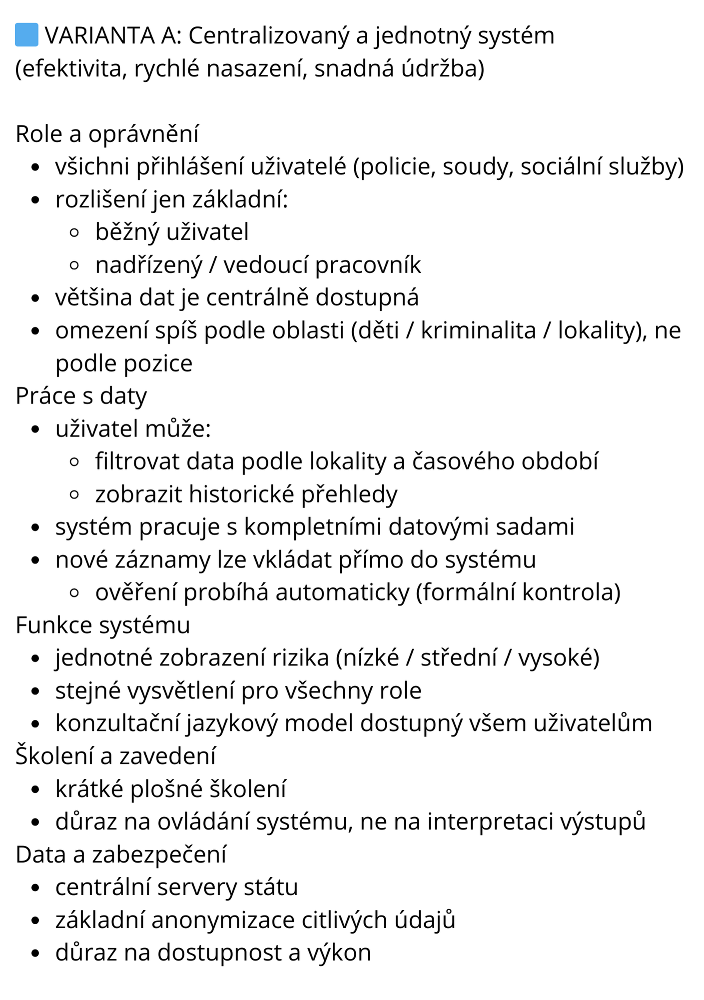
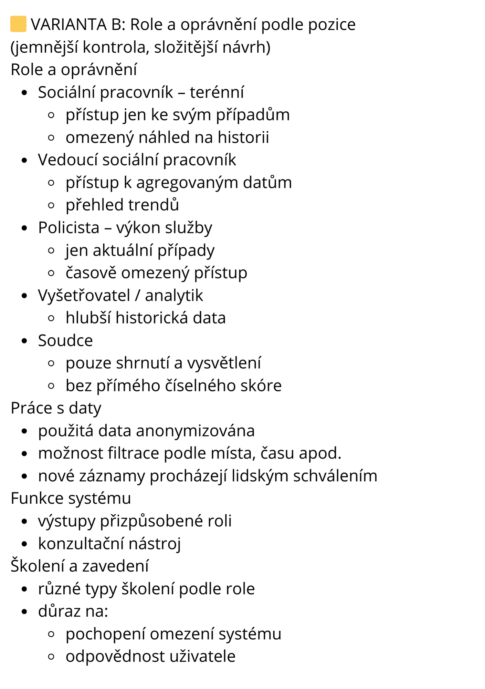
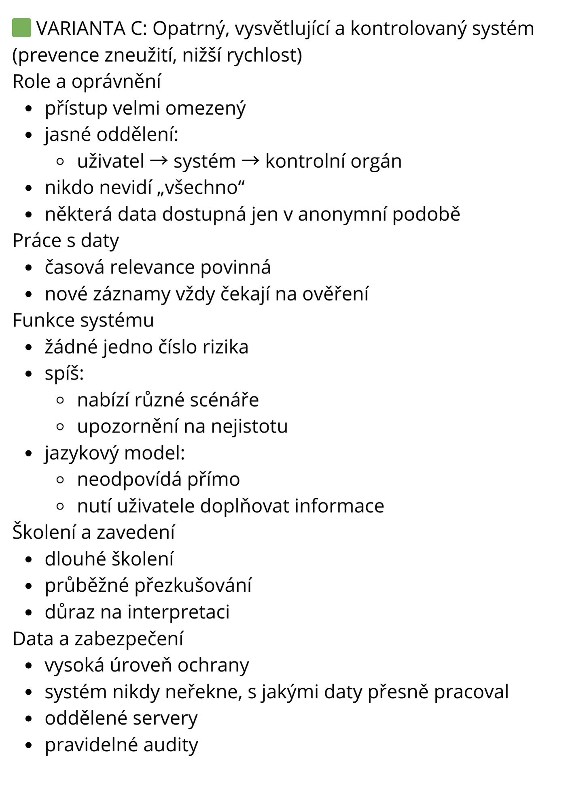
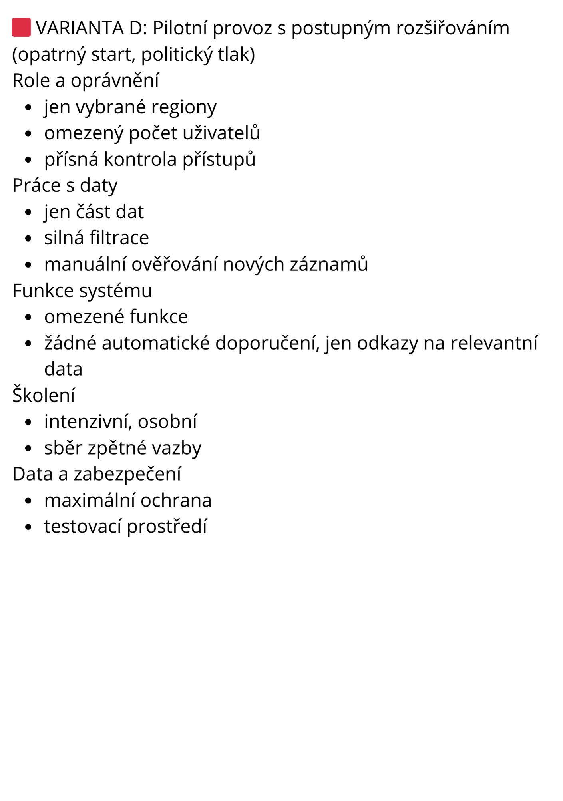

První pracovní den nezačal nijak slavnostně. Sedíš u stolu, který ještě voní novotou. Notebook, hrnek s kávou, přístupové údaje, které sis ráno přepsal/a do poznámek. Firma není velká. Právě to se ti na ní líbilo. Když ses hlásil/a na pozici vývojáře, psali, že chtějí „dělat technologie, které mají smysl“.
Programování tě bavilo už dlouho. Nejen proto, že kód poslouchá. Ale proto, že za těmi řádky může být něco skutečného – lidé, problémy, řešení. Během studia jsi psal/a spoustu programů. Některé byly chytré, jiné jen funkční. Ale většinou končily tam, kde začaly – na obrazovce.
Tady to má být jiné.
Po obědě si tě vedoucí týmu zavolá do zasedačky. Neformálně, bez prezentací. Jen mluví o tom, že firma získala několik nových zakázek. Projekty, které mají lidem něco usnadnit, něco zlepšit, někomu pomoct. Posloucháš a říkáš si, že přesně kvůli tomu ses programování chtěl/a věnovat. Ne kvůli soutěžím v efektivitě kódu. Ale proto, že software může měnit svět k lepšímu. Vedoucí se usměje a ukáže na tři složky na stole.
„Podívej se na ně. Vyber si, na čem by ses chtěl/a podílet.“
Chvíli váháš... Tohle není školní úloha. Tohle je skutečný projekt.
Otevřeš první složku.
Na obálce není logo firmy, jen pracovní název projektu:
„Predikční systém pro podporu rozhodování“.
Listuješ dokumenty. Nejsou dlouhé, spíš věcné.
Projekt vzniká díky dotačnímu programu z EU na tento rok ve spolupráci s několika institucemi. Cílem je pomoci lidem, kteří rozhodují v obtížných situacích – sociálním pracovníkům, soudcům, pracovníkům intervenčních týmů. Systém má na základě dostupných dat odhadovat míru rizika v různých situacích.
Riziko ohrožení dítěte
Riziko výtržností v lokalitách
Riziko dalšího trestného chování u odsouzeného
Nejde o to rozhodovat místo člověka. Jde o podporu rozhodování – upozornit na případy, které by mohly vyžadovat zvláštní pozornost.
V dokumentaci se opakuje jedno slovo: prevence.
Čím dřív se riziko odhalí, tím větší je šance zasáhnout včas...
Je rozhodnuto, AI je v módě a zapojit ji do boje proti zločinu a bezpráví je přeci skvělý nápad.
Ale teď do práce. Projekt je teprve na začátku.
Než se začne psát kód, je potřeba udělat několik zásadních rozhodnutí.
Nemůžeš dělat všechno najednou.
Je na čase rozhodnout, čemu se budeš věnovat jako první.
Jako první si vyžádáš podklady, které má systém využívat.
Data pocházejí z různých míst - od soudů, policie či OSPODu přes kamerové záznamy městských systémů po různé výzkumu a doporučení od odborníků.
Jsou tu třeba záznamy z minulých případů, přehledy událostí, statistiky, stručné poznámky… Část informací se týká konkrétních lidí, jiná popisuje situace nebo lokality obecně. Je to opravdu pestré.
Na první pohled to působí chaoticky, ale brzy si uvědomíš, že v tomhle projektu nejde o dokonalý pořádek.
Jde o to, mít dostupné relevantní informace a moci nad nimi nechat běžet šikovný model umělé inteligence.
Víš, že dnes už existují systémy, které dokážou takové množství informací „slepit“ dohromady. „Hlavní je, aby tam bylo všechno,“ říkáš si. Připadá ti to jako rozumný přístup.
Čím víc informací, tím menší šance, že se něco přehlédne. Nebo ne?
Na projekt samozřejmě nejsi sám/sama, rozhodneš se tedy svolat poradu projektového týmu, abyste podklady probrali.
Mezi částí kolegů převládá zděšení. “To je strašné, ty sady dat jsou nekompatibilní, každý si to dělal úplně jinak a my to teď máme dát dohromady, to si dělají legraci!”
Někdo navrhuje ta nejhůře zpracovaná data prostě vynechat. Do toho se přidají jiní s tím, že by vynechali fotky a videa, že s tím se musí pracovat úplně odlišně a vlastně to není nutné. Další chtějí odstranit to a další tohle, strhne se delší hádka…
Uvědomuješ si, že požadavky na systém jsou komplexní a vynechat něco by jeho funkce omezilo, ale je pravda, že ne všichni uživatelé budou pracovat se stejnými daty. Napadá tě sloučit jen data z podobných oblastí - něco pro bezpečnost v ulicích, něco pro ochranu dětí, něco pro podporu rozhodování na soudech…
“A taky by se třeba níže postavený pracovník neměl dostat k tomu, co už není v jeho kompetenci.” navazuje na tvoji myšlenku jiný kolega.
Diskuse pokračuje a už to začíná mít jasnější obrysy…
Teď přichází na řadu otázka, jak by měl systém vlastně fungovat.
Sedíš nad prázdným dokumentem a přemýšlíš, jestli se do toho pustit rovnou.
Nakreslit základní náčrt, vymyslet hlavní funkce, nastavit jednoduchá pravidla...
Další týmová porada, někteří to berou jako možnost dosáhnutí souhry, někteří už začínají nadávat, že se “víc kecá, než pracuje”.
Ať už je motivace kolegů snaha ti pomoci, nebo se za další poradu pomstít, kladou tolik otázek, že už ti plán vůbec jednoduchý nepřijde.
“Kde budou data uložená?”
“Bude se AI model nejprve trénovat, nebo si z dat najde, co potřebuje, až bude dotázán?”
“Jak budeme data aktualizovat?”
Někdo řeší přihlašování uživatelů a bezpečnost, jiný zmiňuje situace, kdy nebude k dispozici internet. Po chvíli už se otázky netýkají jen samotného systému,
ale i lidí kolem něj.
„Budou mít všichni uživatelé stejný pohled?“
„Nebo uvidí každý jen část?“
Je čas se zaměřit i na tuto oblast...
Rozhodneš se pustit do návrhu fungování systému rovnou.
Otevřeš nový dokument a začneš si psát, kdo a jak s ním vlastně bude pracovat.
Systém nebude přístupný veřejnosti. Přihlašovat se do něj budou jen konkrétní lidé –
pracovníci sociálních služeb, policie, soudů, případně další odborníci podle své role.
Základem systému budou informace, které už dnes někde existují. Záznamy z minulých případů, přehledy událostí v konkrétních lokalitách, některá rozhodnutí z minulosti, statistiky, hlášení z terénu.
Představíš si, že uživatel otevře konkrétní případ nebo situaci. Zadá základní informace, které má k dispozici. Systém je porovná s tím, co už zná z minulosti,
a nabídne odhad míry rizika.
K tomu by systém mohl nabídnout krátké vysvětlení:
„Tento případ je na 80% podobný případu XY“
„Pozor, faktor XY je dle výzkumné studie XY velmi rizikový“
Napadne tě, že by tu tedy mohl být i konzultační nástroj. Něco jako chytrý textový pomocník, který by uživateli pomohl zformulovat dotaz, shrnout situaci
nebo se zorientovat v tom, co všechno má vzít v úvahu.
Když si to všechno znovu projdeš, dokážeš si představit, že už by se podle toho dalo začít systém opravdu stavět.
Když máš před sebou shrnutí návrhu systému, začneš si ho znovu procházet očima někoho, kdo ho má opravdu používat.
Stejný systém.
Stejný výstup.
Ale pokaždé v jiném kontextu.
U sociálního pracovníka si představíš, že výsledek otevře při běžné kontrole případu. Možná jen jako jeden z mnoha podkladů. Možná jako varování, že by měl zbystřit.
U policisty to bude jiné. Rychlá situace, tlak, málo času. Tam může být barevné upozornění silnější než dlouhý text.
A pak jsou tu soudci. Ti mají systém používat opatrně. Jako jeden ze zdrojů, ne jako rozhodnutí.
Jenže když si to představíš v praxi, začneš váhat, jestli se to tak opravdu stane.
Co když někdo přestane číst podklady a začne se spoléhat na shrnutí?
Tvoje obavy umocňuje i diskuse, kterou jsi zahlédl/a na sociálních sítích, když se Ministerstvo spravedlnosti o plánovaném systému zmínilo.
Někteří lidé projekt vítají.
Jiní jsou opatrní.
„Nechci, aby o mně rozhodoval počítač,“ píše někdo.
„Jestli to pomůže zasáhnout včas, tak proč ne,“ odpovídá jiný.
Některé komentáře jdou ještě dál: "Tak a teď budou odebírat děti rodinám jen proto, že se narodily na špatném místě, nebo se rodiče rozvedli, to je skandál!" nebo "Hlavně, že se soudcům zvyšují platy a on za ně bude pracovat počítač, tak dejte ty peníze normálním lidem!"
Čteš to a dochází ti, že systém už teď vyvolává emoce – ještě dřív, než vůbec existuje.
Je čas se pokusit zabojovat, aby finální reputace nebyla tak strašná.
Teď přichází na řadu otázka, jak by měl systém vlastně fungovat.
Sedíš nad prázdným dokumentem a přemýšlíš, jestli se do toho pustit rovnou.
Nakreslit základní náčrt, vymyslet hlavní funkce, nastavit jednoduchá pravidla...
Rozhodneš se pustit do návrhu fungování systému rovnou.
Otevřeš nový dokument a začneš si psát, kdo a jak s ním vlastně bude pracovat.
Systém nebude přístupný veřejnosti. Přihlašovat se do něj budou jen konkrétní lidé –
pracovníci sociálních služeb, policie, soudů, případně další odborníci podle své role.
Základem systému budou informace, které už dnes někde existují. Záznamy z minulých případů, přehledy událostí v konkrétních lokalitách, některá rozhodnutí z minulosti, statistiky, hlášení z terénu.
Představíš si, že uživatel otevře konkrétní případ nebo situaci. Zadá základní informace, které má k dispozici. Systém je porovná s tím, co už zná z minulosti,
a nabídne odhad míry rizika.
K tomu by systém mohl nabídnout krátké vysvětlení:
„Tento případ je na 80% podobný případu XY“
„Pozor, faktor XY je dle výzkumné studie XY velmi rizikový“
Napadne tě, že by tu tedy mohl být i konzultační nástroj. Něco jako chytrý textový pomocník, který by uživateli pomohl zformulovat dotaz, shrnout situaci
nebo se zorientovat v tom, co všechno má vzít v úvahu.
Už máš v hlavě nějakou bližší představu, můžeš pokročit na průzkum dalších oblastí.
Nejdřív to vypadalo jako běžná pracovní schůzka.
Každý přišel s poznámkami, někdo s kávou, někdo s notebookem.
První minuty jsou spíš o ujasnění zadání.
Co vlastně má systém dělat.
Co naopak dělat nemá.
S jakými daty budeme pracovat.
Pak se začnou objevovat konkrétní otázky.
“Kde budou data uložená?”
“Bude se AI model nejprve trénovat, nebo si z dat najde, co potřebuje, až bude dotázán?”
“Jak budeme data aktualizovat?”
„Kdo rozhodne, že stará data už nejsou relevantní?“
Po chvíli už se otázky netýkají jen samotného systému,
ale i lidí kolem něj.
„Budou mít všichni uživatelé stejný pohled?“
„Nebo uvidí každý jen část?“
Někdo jiný připomíná, že je hezké řešit tyto detaily, ale hlavně bychom měli být schpni dát dohromady ta data, která jsou opravu pestrá a zároveň v různých formátech, což bude problém.
Čas běží.
Někdo už přestal psát poznámky a jen poslouchá. Jiný si povzdechne, že místo práce jen mluvíte. Přesto máš pocit, že tahle porada dává smysl. Ne proto, že by přinesla jasné odpovědi. Ale proto, že ukazuje, kolik rozhodnutí se musí udělat, než systém vůbec začne fungovat.
Když se schůzka konečně chýlí ke konci, nemáte hotové řešení. Máte ale seznam věcí, které je potřeba lépe prozkoumat.
Jako další krok si vyžádáš informace o datech, které má systém využívat.
Data pocházejí z různých míst - od soudů, policie či OSPODu přes kamerové záznamy městských systémů po různé výzkumu a doporučení od odborníků.
Jsou tu třeba záznamy z minulých případů, přehledy událostí, statistiky, stručné poznámky… Část informací se týká konkrétních lidí, jiná popisuje situace nebo lokality obecně. Je to opravdu pestré.
Na první pohled to působí chaoticky, ale brzy si uvědomíš, že v tomhle projektu nejde o dokonalý pořádek.
Jde o to, mít dostupné relevantní informace a moci nad nimi nechat běžet šikovný model umělé inteligence.
A s tím se pojí bezpečnost - víš, že existují systémy, které dokážou takové množství informací „slepit“ dohromady, a nejprve jsi právě touto cestou chtěl/a jít, ale když si vzpomeneš na diskusi na poradě, uvědomíš si, že ne všichni uživatelé budou pracovat se stejnými daty. Napadá tě sloučit jen data z podobných oblastí - něco pro bezpečnost v ulicích, něco pro posuzování rizikovécho chování jednotlivých občanů, něco pro rozhodování u soudů a ve vězeních.
Nebo by se to mělo rozdělit jinak?
To tě vede k myšlence prozkoumat, kdo a jak bude se systémem pracovat.
Jako další krok si vyžádáš podklady, které má systém využívat.
Data pocházejí z různých míst - od soudů, policie či OSPODu přes kamerové záznamy městských systémů po různé výzkumu a doporučení od odborníků.
Jsou tu třeba záznamy z minulých případů, přehledy událostí, statistiky, stručné poznámky… Část informací se týká konkrétních lidí, jiná popisuje situace nebo lokality obecně. Je to opravdu pestré.
Na první pohled to působí chaoticky, ale brzy si uvědomíš, že v tomhle projektu nejde o dokonalý pořádek.
Jde o to, mít dostupné relevantní informace a moci nad nimi nechat běžet šikovný model umělé inteligence.
Víš, že dnes už existují systémy, které dokážou takové množství informací „slepit“ dohromady. „Hlavní je, aby tam bylo všechno,“ říkáš si. Připadá ti to jako rozumný přístup.
Čím víc informací, tím menší šance, že se něco přehlédne. Nebo ne?
Super nápad, na tom už by se dalo stavět. Takže víme, co má systém dělat a jak toho docílit... Co teď?
Když máš před sebou shrnutí návrhu systému, začneš si ho znovu procházet očima někoho, kdo ho má opravdu používat.
Stejný systém.
Stejný výstup.
Ale pokaždé v jiném kontextu.
U sociálního pracovníka si představíš, že výsledek otevře při běžné kontrole případu. Možná jen jako jeden z mnoha podkladů. Možná jako varování, že by měl zbystřit.
U policisty to bude jiné. Rychlá situace, tlak, málo času. Tam může být barevné upozornění silnější než dlouhý text.
A pak jsou tu soudci. Ti mají systém používat opatrně. Jako jeden ze zdrojů, ne jako rozhodnutí.
Jenže když si to představíš v praxi, začneš váhat, jestli se to tak opravdu stane.
Co když někdo přestane číst podklady a začne se spoléhat na shrnutí?
Tvoje obavy umocňuje i diskuse, kterou jsi zahlédl/a na sociálních sítích, když se Ministerstvo spravedlnosti o plánovaném systému zmínilo.
Někteří lidé projekt vítají.
Jiní jsou opatrní.
„Nechci, aby o mně rozhodoval počítač,“ píše někdo.
„Jestli to pomůže zasáhnout včas, tak proč ne,“ odpovídá jiný.
Některé komentáře jdou ještě dál: "Tak a teď budou odebírat děti rodinám jen proto, že se narodily na špatném místě, nebo se rodiče rozvedli, to je skandál!" nebo "Hlavně, že se soudcům zvyšují platy a on za ně bude pracovat počítač, tak dejte ty peníze normálním lidem!"
Čteš to a dochází ti, že systém už teď vyvolává emoce – ještě dřív, než vůbec existuje.
Je čas se pokusit zabojovat, aby finální reputace nebyla tak strašná.
Než se pustíš do dat nebo funkcí, zastavíš se u jedné otázky:
Kdo s tímhle systémem bude každý den pracovat?
Máš zkušenost, že dobrý nástroj se pozná podle toho, že lidé chtějí ho používat – ne proto, že musí, ale proto, že jim pomáhá. Rozhodneš se proto začít od uživatelů a jejich potřeb.
Sedíš nad poznámkami a začneš si vytvářet modelové uživatele.
Ne konkrétní osoby, ale typické role, se kterými systém musí počítat. Tenhle trik tě ve škole naučili, je to pro designéry fakt super pomůcka.
Představíš si terénního sociálního pracovníka.
Má na starosti několik případů najednou, často pracuje pod tlakem a potřebuje poznat, jestli se situace zhoršuje, někdy jde o rychlost zásahu v krizi, někdy spíše o všimnutí si rizika předem.
Pak policistu ve službě.
Řeší akutní situace, nemá čas číst dlouhé texty a potřebuje jasný signál, jestli je situace riziková. Případně se rozmýší, kterou část obce častěji kontrolovat - k tomu se mu hodí statistika, ale nepotřebuje znát detily případů.
A nakonec soudce nebo soudkyni.
Pracují se spisy, rozhodují s odstupem a potřebují výstupy, které lze obhájit a vysvětlit. Pro ně jsou klíčové detaily a souvislosti, aby se mohli správně rozhodnout, koho odsoudit a na jak dlouho - jaká je pravděpodobnost jeho vinny a jeho pokračování v trestné činnosti po propuštění.
Ke každé roli si připíšeš:
co v systému potřebuje vidět
co naopak vidět nemusí
v jakém časovém tlaku pracuje
Připadá ti, že to dává smysl.
Role jsou přehledné a dají se dobře převést do návrhu funkcí.
Rozhodneš se nejdřív zjistit, jak by lidé takový systém skutečně vnímali. Domluvíš si několik krátkých rozhovorů s lidmi z praxe.
Sociální pracovníci mluví o tom, že už teď mají hodně administrativy a bojí se, aby systém nebyl další povinností. Přínos ale vidí v opoře při rozhodování v náročných sitacích. Ocenili by možnost konzultovat s AI modelem své případy, když kolegové nemají čas - "Přeci jen je nás málo a jsme vytížení, každý z nás má na starosti desítky případů." vysvětlují.
Policisté zdůrazňují, že v krizových situacích potřebují jasné a rychlé informace. Nechtějí si číst příběhy, chtějí upozrnit na rizikové oblasti v obci, vytipovat specifické občany, se kterými může být potíž, a zaznamenávat si někam své zásahy, se kterými by systém dál pracoval.
Soudci sice souhlasí se sociálními pracovníky, že opora při rozhodování je fajn, ale mnohem častěji upozorňují na rizika: "Někdy jsou případy velmi komplexní, počítač by se mohl zaměřit jen na určité faktory a pak pošleme do vězení nevinného."
Zaznívají i obavy ohledně snížení profesionality dalších generací soudců: "Co když noví kolegové budou na systém spoléhat a nebudou se chtít dál vzdělávat a věnovat případům takovou pozornost?"
Opomenout nemůžeš ani deiskusi, kterou jsi zahlédl/a na sociálních sítích, když se Ministerstvo spravedlnosti o plánovaném systému zmínilo.
Někteří lidé projekt vítají.
Jiní jsou opatrní.
„Nechci, aby o mně rozhodoval počítač,“ píše někdo.
„Jestli to pomůže zasáhnout včas, tak proč ne,“ odpovídá jiný.
Některé komentáře jdou ještě dál: "Tak a teď budou odebírat děti rodinám jen proto, že se narodily na špatném místě, nebo se rodiče rozvedli, to je skandál!" nebo "Hlavně, že se soudcům zvyšují platy a on za ně bude pracovat počítač, tak dejte ty peníze normálním lidem!"
Uvědomíš si, že do systému budou vkládána data o lidech, kteří ho nikdy neuvidí a nikdy s ním nebudou mluvit. A že jejich důvěra může být stejně důležitá jako funkčnost systému.
Tak je čas to zapracovat do návrhu...
Pokračuješ tím, že si zkusíš ujasnit, jak by systém mohl fungovat v praxi.
Otevřeš nový dokument a začneš si psát základní poznámky.
Systém nebude přístupný veřejnosti. Přihlašovat se do něj budou jen vybraní lidé – pracovníci sociálních služeb, policie, soudů a případně další odborníci, každý podle své role a pozice.
Základem systému budou informace, které už dnes někde existují. Záznamy z minulých případů, přehledy událostí v konkrétních lokalitách, některá soudní rozhodnutí, statistiky, hlášení z terénu.
Představíš si, že uživatel otevře konkrétní případ nebo sleduje určitou situaci. Zadá základní informace, které má k dispozici. Systém je porovná s tím, co už zná z minulosti, a nabídne odhad míry rizika.
K tomu by systém mohl nabídnout krátké vysvětlení:
„Tento případ je na 80% podobný případu XY“
„Pozor, faktor XY je dle výzkumné studie XY velmi rizikový“
Napadne tě, že by tu tedy mohl být i konzultační nástroj. Něco jako chytrý textový pomocník, který by uživateli pomohl zformulovat dotaz, shrnout situaci
nebo se zorientovat v tom, co všechno má vzít v úvahu.
Když si to všechno znovu projdeš, dokážeš si představit, že už by se podle toho dalo začít systém opravdu stavět.
Než dokument zavřeš, na chvíli se zastavíš. Ten pocit znáš – všechno do sebe začíná zapadat, ale zároveň víš, že některé věci zatím zůstaly jen mezi řádky.
Rozhodneš se proto svolat krátkou poradu týmu.
Ne o detailech, spíš o tom, co by se nemělo přehlédnout.
Někdo otevře otázku bezpečnosti dat.
Kde budou informace uložené? Kdo se k nim dostane, když se něco pokazí? A co se stane, když systém někdo napadne nebo zneužije?
Další připomene, že systém má fungovat dlouhodobě.
Že se budou měnit zákony, že se budou měnit lidé, kteří s ním pracují, a že bez pravidelné údržby a aktualizací může rychle zastarat.
Padne i otázka odpovědnosti.
Kdo ponese následky, když se systém použije špatně nebo když se jeho výstup ukáže jako zavádějící?
A nakonec někdo poznamená, že lidé budou systém používat různě. Někdo opatrně, jiný bez přemýšlení. A že s tím návrh musí počítat.
Do dokumentu si doplníš několik poznámek. Ne jako hotová řešení, spíš jako věci, ke kterým se budeš muset vrátit. Máš před sebou dlouhou cestu, musíš vše pořádně promyslet, naplánovat a předvést veřejnosti, co dokážete.
Čas běží, promyslel/a jsi spoustu aspektů proejktu a přišel čas na finální rozhodnutí. Máš před sebou několik možných podob systému.
Všechny jsou technicky proveditelné.
Všechny splňují zadání.
Do šeho máš chuť se pustit? Jakou cestou povedeš svůj tým?




Systém je nasazen rychle. Školení proběhla během několika týdnů a uživatelé si chválí, že se konečně nemusí učit tři různé nástroje. Výstup je jasný. Riziko nízké, střední nebo vysoké.
Brzy si ale všímáš drobné změny v tom, jak se o systému mluví.
Sociální pracovníci si začnou mezi sebou porovnávat případy a předhání se v tom, kdo zachytí nejvíc rizikových situací.
Policisté se naopak ptají, proč mají řešit situaci, když systém vyhodnotil nízké riziko.
A u soudů se objeví první rozhodnutí, kde je výstup systému citován téměř jako fakt.
V médiích se objeví titulek:
„Stát rozhoduje podle algoritmu?“
Víš, že systém nerozhoduje. Ale také víš, že když všichni vidí totéž, začíná to působit jako jediná pravda.
Kdyby ses mohl/a vrátit v čase, udělal/a bys něco jinak?
Systém funguje přesně tak, jak byl navržen. Každá role vidí jiná data. Každá pozice má jiná oprávnění. Ze začátku to působí jako úspěch. Nikdo nemá přístup k informacím, které nepotřebuje.
Pak ale přijde první problém.
Sociální pracovník řeší případ, který se začne rychle zhoršovat. Ví, že existují další informace – ale systém mu je neukáže. Obrátí se na nadřízeného. Ten má přístup. Ale je zrovna mimo.
Jindy si policista všimne, že soud má k dispozici jiný výstup než on. „Na základě čeho se rozhodli?“ ptá se.
Postupně se začnou objevovat žádosti o vyšší oprávnění.
Výjimky.
Dočasná přístupová práva.
Systém je bezpečný. Ale jen do chvíle, než se začne ohýbat ve jménu praxe.
Kdyby ses mohl/a vrátit v čase, udělal/a bys něco jinak?
Systém je spuštěn s velkou opatrností. Uživatelé dostávají scénáře, vysvětlení, upozornění na nejistoty. Na školeních se mluví o odpovědnosti a kontextu.
Jenže praxe je neúprosná.
V krizových situacích lidé hledají rychlé odpovědi.
„Co z toho vlastně plyne?“
„Máme zasáhnout, nebo ne?“
Někteří uživatelé začnou systém používat méně. Jiní si z něj berou jen to, co se jim hodí. Objeví se i neoficiální zkratky: poznámky, interní návody, jak si složitý výstup „přeložit“.
Systém je férový. Ale v době tlaku a stresu ho část lidí prostě obejde, prtože jim "vlastně příliš nepomáhá".
Kdyby ses mohl/a vrátit v čase, udělal/a bys něco jinak?
Pilotní provoz běží v několika regionech. Data se pečlivě sledují. Problémy se zapisují. Odborníci si systém i tento opatrný přístup chválí.
Jenže mimo pilotní oblasti se začínají ozývat hlasy.
„Proč mají někde lepší nástroje než my?“
„A kolik dětí mezitím zůstane bez pomoci?“
Politici se ptají na výsledky.
Média chtějí čísla.
Blíží se konec doby, po kterou je možné projekt financovat.
Tlak na rozšíření roste. Víš, že systém ještě není připravený. Ale také víš, že rozhodnutí už není jen technické. Podnětů na zlepšení přišlo hodně, ale stejně nezbyl čas ani peníze na to, aby se všechno vyřešilo. Musíte doplnit data, přidat přístupy pracovníkům zbývajících oblastí a vydat ne úplně hotový produkt... Ale třeba se zase někdy najdou finance a vy, nebo jiná firma, budete moci systém vylepšit.
Kdyby ses mohl/a vrátit v čase, udělal/a bys něco jinak?
Zastavíš se a na chvíli se ohlédneš. Projekt se posunul daleko. Systém funguje, lidé ho používají, výsledky mají reálný dopad. A přesto tě napadá několik momentů, kde bys dnes postupoval/a jinak. Ne proto, že bys tehdy udělal/a chybu. Ale proto, že dnes vidíš víc souvislostí.
Uvědomíš si, že některá rozhodnutí byla uspěchaná, některé otázky prostě předem nezazněly a člověk nemůže při návrhu věštit z křišťálové koule.
To není selhání.
To je zkušenost.
Vývoj není o tom mít hned dokonalé řešení. Je o tom učit se, vracet se, upravovat směr.
Pokud chceš, můžeš si dát ještě čas.
Zkusit si příběh projít znovu, zaměřit se na jiné části, všímat si jiných detailů...
Tentokrát už budeš vědět, na co se dívat.
Když se ohlédneš zpět, stojíš si za tím, co jsi udělal/a.
Rozhodnutí dávala smysl v době, kdy vznikala.
Měl/a jsi omezené informace, tlak na čas
a očekávání, která nešla ignorovat.
To, že se později objevily problémy,
neznamená, že návrh byl špatný.
Znamená to, že technologie nikdy nefungují ve vakuu.
Vždy se potkají s lidmi.
S institucemi.
S emocemi.
S realitou, která je složitější než jakýkoli model.
I sebelepší návrh může něco opomenout. Ne proto, že by byl nemorální, ale proto, že svět není jednoznačný. A to je důvod,proč je důležité o technologiích přemýšlet
nejen jako o funkčních nástrojích, ale jako o součástech společnosti.
Pokud chceš, můžeš si příběh projít znovu, zkusit se zastavit jinde, položit si jiné otázky.
Možná pak uvidíš jiné věci.
A možná ne.
Otevřeš druhou složku.
Tento popis projektu je obsáhlý. Hodně schémat, náčrtů obrazovek, poznámek na okrajích.
Jde o digitální portál státní správy. Jedno místo, kde by občané mohli řešit většinu běžných záležitostí bez nutnosti chodit na úřad. Přihlášení, formuláře, žádosti, přehled stavu vyřízení. Dokumentace mluví o zjednodušení, přehlednosti, úspoře času. O tom, že lidé často neví, kam se obrátit, a že technologie může spoustu věcí zpřístupnit.
Nejde o nic převratného. Podobné systémy už existují jinde. Tady by ale měl vzniknout jeden společný, přehledný a dobře navržený celek.
Když listuješ návrhy obrazovek, napadá tě, že přesně tohle je typ projektu, kde záleží na detailech. A je to krok k modernímu státu…
Třetí složka je lehčí než ty předchozí. Uvnitř je méně textu, víc obrázků.
Projekt se zaměřuje na vývoj VR aplikace pro podporu kognitivních funkcí a emoční pohody seniorů. Trénink paměti, orientace, jednoduché úkoly, ale také klidná prostředí – zahrady, města, místa, kam se už ne každý dostane.
Dokumentace mluví o tom, že technologie může pomoct lidem zůstat déle aktivní a samostatní.
V návrzích vidíš jednoduché ovládání, velké prvky, pomalé tempo.
Působí to lidsky. A jinak než projekty, které se točí kolem tabulek a čísel.
Představíš si, že by podobnou aplikaci mohl používat někdo z tvé rodiny. A že by kód, který napíšeš, mohl mít velmi konkrétní dopad.